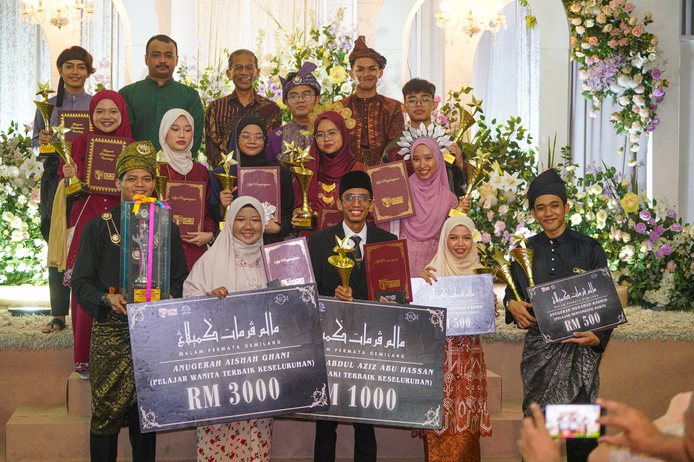
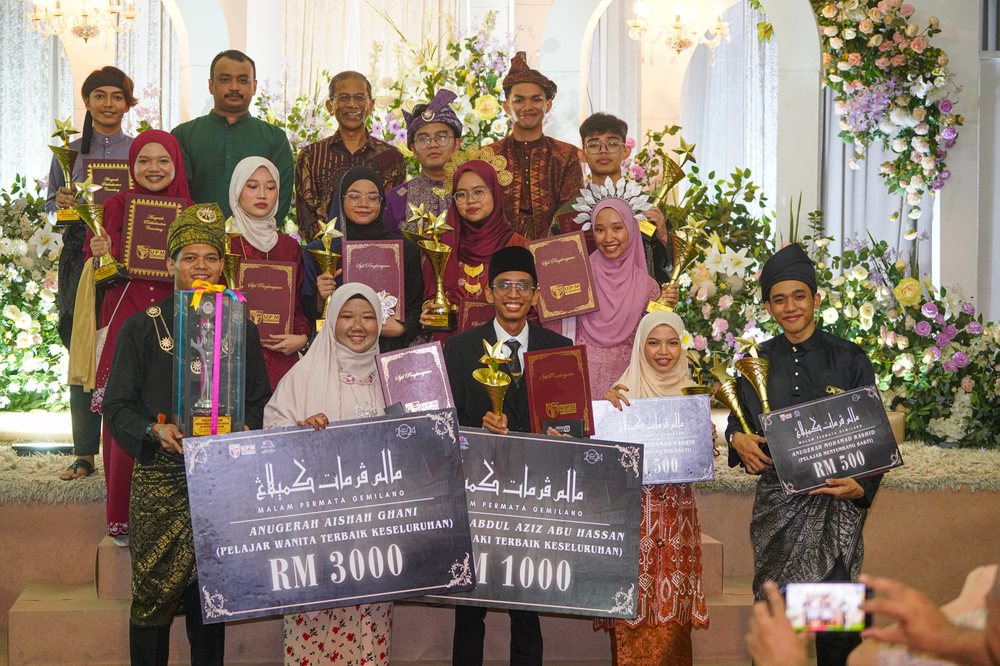

Attended as the representative of Malaysia for the Shanghai Summer School 2024 program, where I explored global perspectives on education, technology, and culture. It was an enriching experience that enhanced my cross-cultural communication skills and provided networking opportunities with international peers.

Served as the treasurer for the Semarak Siswa Madani @ Turkiye 2024 program in Turkiye, a student leadership and cultural exchange initiative. My role involved managing the program's finances, ensuring transparency in budgeting, and optimizing resource allocation. Through strategic financial planning, I helped secure sufficient funding for activities, travel logistics, and accommodation, ultimately ensuring a smooth and well-organized program. This experience strengthened my financial management skills and enhanced my ability to work under pressure in an international setting.
 

As the director of Malam Permata Gemilang 2024, I was responsible for leading and overseeing the entire event, which served as the annual college dinner celebrating final-year students before their graduation. I coordinated a team of organizers, handled event logistics, and ensured the program ran seamlessly. My leadership in planning, budgeting, and executing the event helped create a memorable evening filled with meaningful tributes, performances, and awards. This role enhanced my event management, problem-solving, and leadership skills while allowing me to contribute to a significant milestone in my peers' academic journey.
| Event | Role | Key Contributions |
|---|---|---|
| Shanghai Summer School 2024 | Participant | Cross-cultural learning, networking |
| Semarak Siswa Madani @ Turkiye 2024 | Treasurer | Managed finances, secured funding |
| Malam Permata Gemilang 2024 | Director | Event planning, leadership |